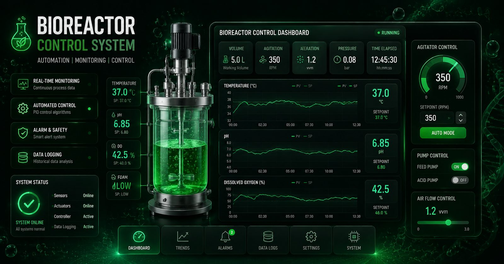

Project documentation — Index 32
Bioreactor Agitator Control
A feedback-controlled mixing system for a bioreactor prototype — built and calibrated during my control-engineering internship at LSKK, Institut Teknologi Bandung.

Project documentation — Index 32
A feedback-controlled mixing system for a bioreactor prototype — built and calibrated during my control-engineering internship at LSKK, Institut Teknologi Bandung.

Bioreactors need precise control of mixing speed — too slow and the culture starves of oxygen, too fast and you shear the cells. During my internship at LSKK ITB I developed and calibrated the agitator control system for a bioreactor prototype: a feedback loop that holds the target rotation speed and reports it in real time on the display.
The prototype's agitator showed one speed on screen and did another in the vessel — a display-truth gap that makes any downstream measurement unreliable. The system needed calibrated feedback control so that what the operator sees is what the fluid gets.
Aligned actual rotation speed with the displayed value through systematic measurement.
Improved control accuracy and overall system performance.
Enhanced through precise speed regulation.
Comprehensive testing and performance evaluation of the loop.